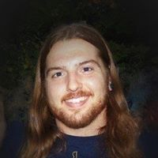

About Us


The TPM Foundation is a 501(c)3 nonprofit organization supporting people affected by addiction with immediate help and valuable resources. We are located in Mineral County, West Virginia and serve the surrounding area.
About the TPM Foundation
The Travis Phillip Moreland Foundation was formed in the Spring of 2017 by the Moreland Family in memory of Travis Phillip Moreland, who passed away in January of 2017.
It is a 501(c)3 nonprofit organization based in Mineral County, WV. Contributions are tax deductible.
Current members of the Board of Directors are Allen Moreland, Christy Moreland, Pam Howser, Jessica Lynn, Lori Lambert, Dee Lockard, and Kathy Owens. We are also blessed with many volunteers.
About Travis Phillip Moreland
He grew up in Short Gap, West Virginia and was a graduate of Frankfort High School where he was a sports enthusiast -- participating in football, basketball, baseball and track. He continued his education attending Fairmont State University. He was skilled in welding and carpentry. Travis was a member of the Wiley Ford Church of the Brethren. Living his life one day at a time, he took the time to enjoy his family and friends and coworkers. The Serenity Prayer brought him comfort, “God grant me the serenity to accept the things I cannot change, courage to change the things I can, and the wisdom to know the difference.” Travis was ever mindful that “today is a good day.” He always took the time to reflect on the love he had for family and the honor he had for friends. “Travis makes us smile.” With an appreciation of God’s creative nature, summer was the time of year Travis especially enjoyed -- spending time on the river fishing from his kayak and in the Fall, deer hunting with his family at their hunting camp in the beautiful mountains of West Virginia. Travis participated in both community sports teams and organizations. And, he never met a stranger.